Best Museums
Argentina
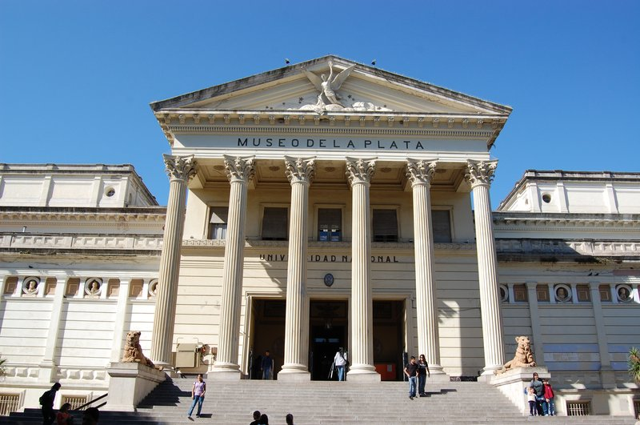
Museo de La Plata
La Plata, Argentina
Argentine natural sciences museum famous for its paleontology halls, with mounted dinosaur skeletons and fossils of South America's extinct Ice Age megafauna.
Australia
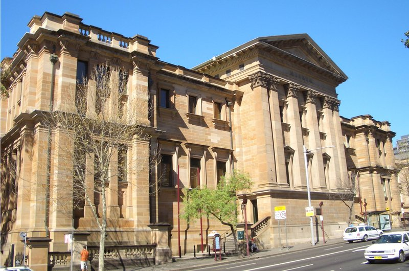
Australian Museum
Sydney
Australia's oldest museum, focused on natural history and Indigenous cultures, with collections of native wildlife, minerals, and First Nations artifacts.
Austria
Naturhistorisches Museum Wien
Vienna
Vienna's grand natural history museum, home to the prehistoric Venus of Willendorf figurine, meteorite collections, and extensive zoological and mineral halls.
Canada
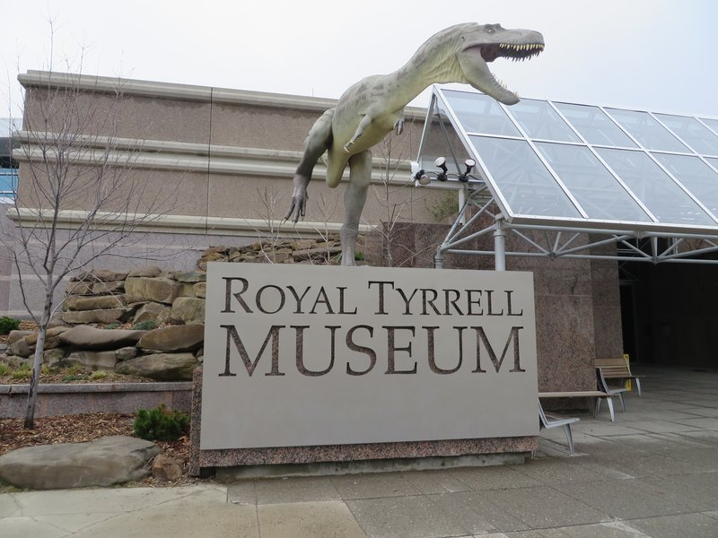
Royal Tyrrell Museum of Palaeontology
Drumheller, Alberta
Museum devoted entirely to paleontology, set in the fossil-rich badlands of Alberta, with one of the world's largest displays of mounted dinosaur skeletons.
Canadian Museum of History
Gatineau, Quebec
Canada's most-visited museum, across the river from Ottawa, tracing the country's human history, with a Grand Hall of Pacific Northwest totem poles and First Peoples exhibits.
China
National Museum of China
Beijing
One of the world's most-visited museums, on the east side of Tiananmen Square, chronicling Chinese history and art from ancient bronzes through the modern era.

Shanghai Museum
Shanghai
Museum of ancient Chinese art, particularly noted for its collections of bronzes, ceramics, calligraphy, and jade, housed in a distinctive round-topped building.
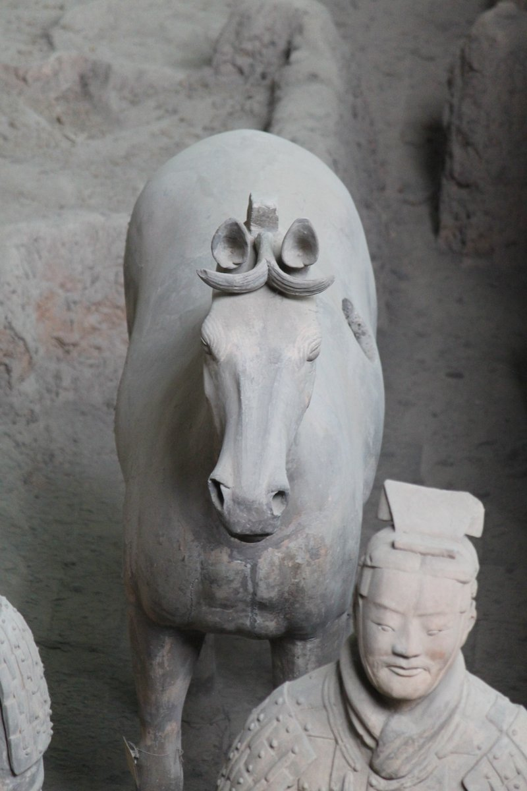
Egypt
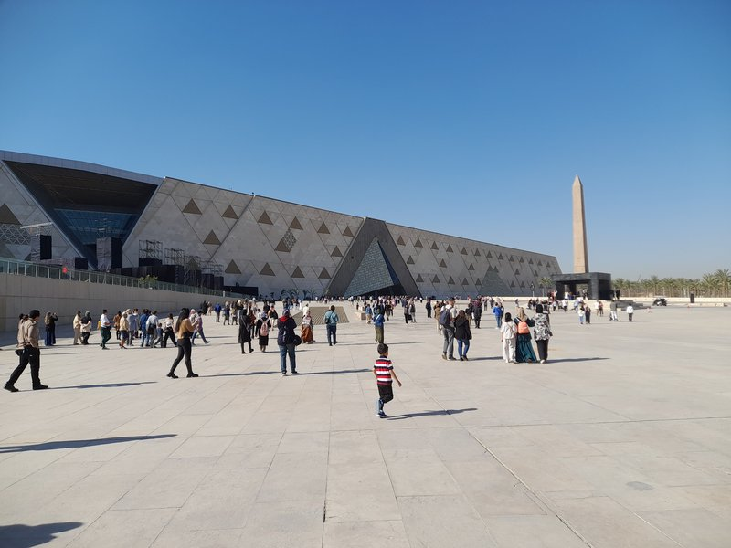
Grand Egyptian Museum
Giza
Vast archaeological museum near the Giza pyramids, built to display the complete Tutankhamun collection together for the first time along with monumental statuary.
France
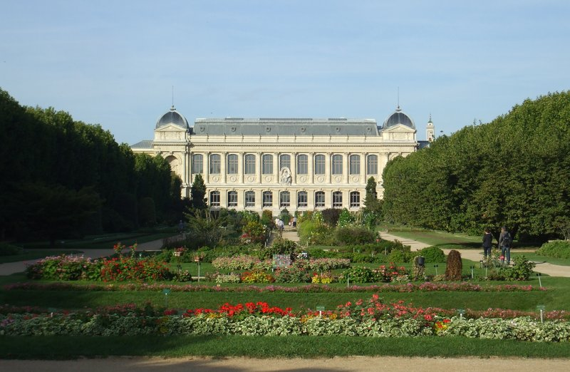
Muséum national d'Histoire naturelle
Paris
France's national natural history institution centered on the Jardin des Plantes, best known for its Grande Galerie de l'Évolution and paleontology galleries.
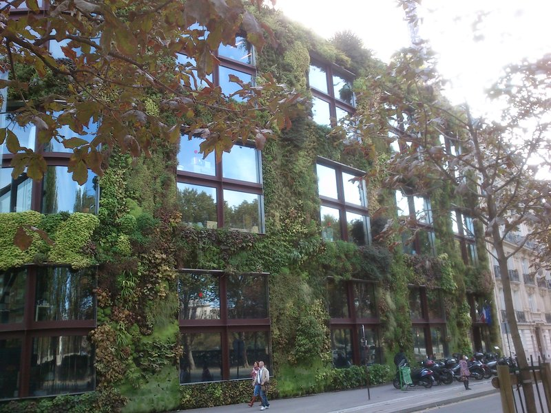
Musée du quai Branly – Jacques Chirac
Paris
Museum devoted to the indigenous arts and cultures of Africa, Asia, Oceania, and the Americas, in a Jean Nouvel building beside the Seine near the Eiffel Tower.
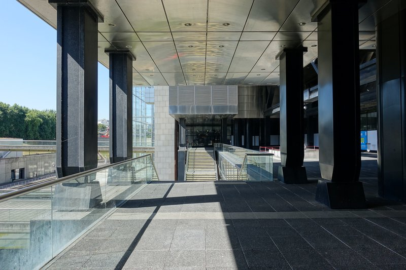
Cité des Sciences et de l'Industrie
Paris
Large science and technology museum in the Parc de la Villette, with interactive exhibits, a planetarium, and the spherical La Géode cinema on its grounds.
Germany
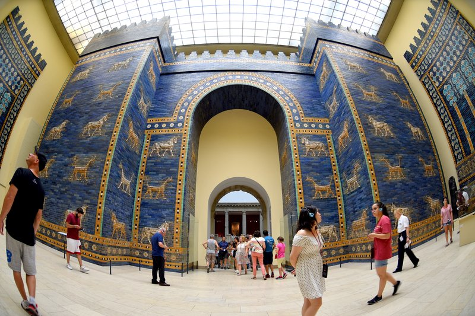
Pergamon Museum
Berlin
Museum Island institution known for monumental reconstructed antiquities, including the Ishtar Gate of Babylon and the Market Gate of Miletus.
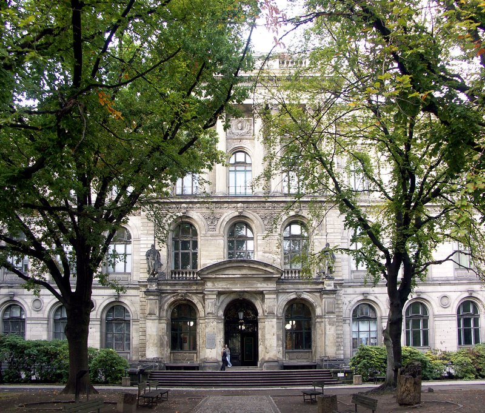
Museum für Naturkunde
Berlin
Berlin natural history museum whose centerpiece is a mounted Brachiosaurus, one of the tallest dinosaur skeletons on display, alongside a preserved Archaeopteryx fossil.
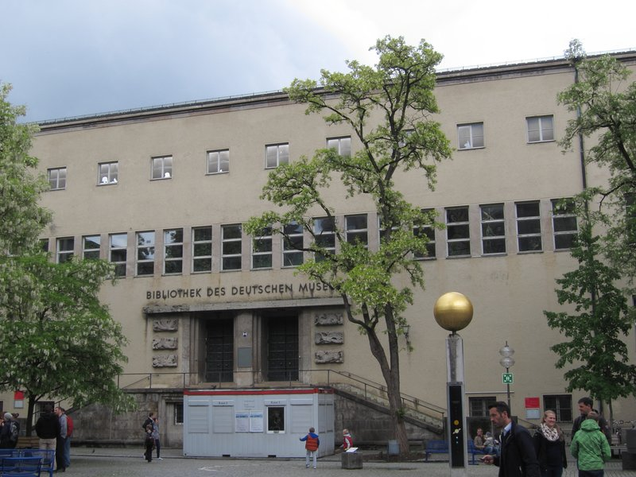
Deutsches Museum
Munich
One of the world's largest science and technology museums, set on an island in the Isar, covering mining, aviation, shipping, physics, and astronomy.
Greece
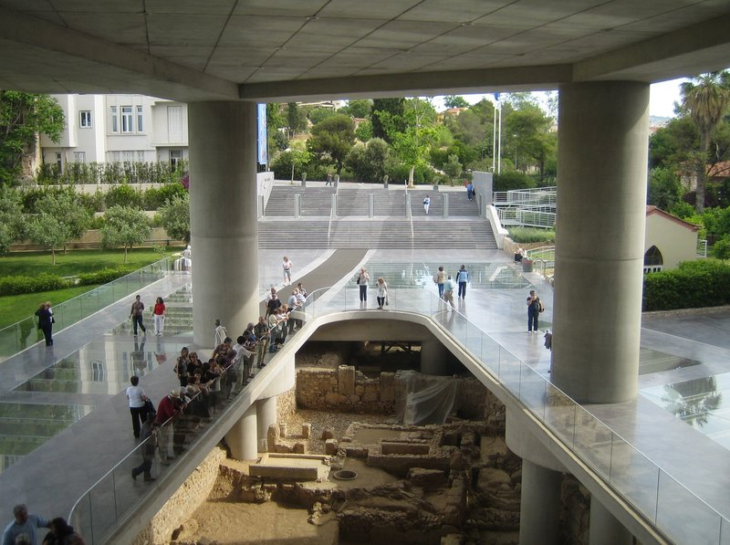
Acropolis Museum
Athens
Modern museum at the foot of the Acropolis housing sculptures and artifacts recovered from the site, with a top-floor gallery aligned to the Parthenon.
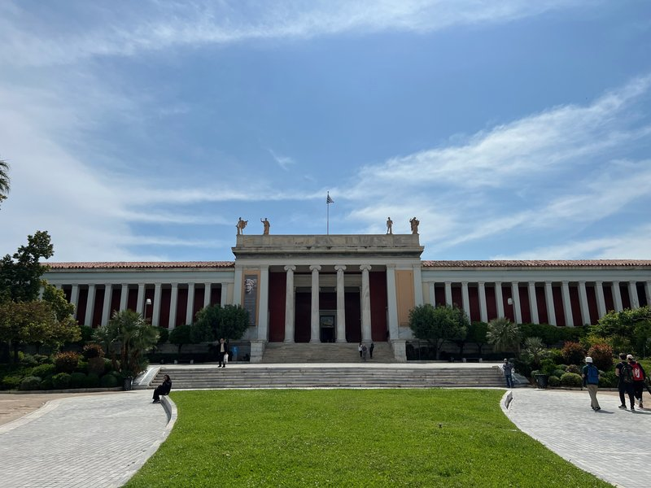
National Archaeological Museum
Athens
Greece's largest archaeological museum, spanning prehistory to late antiquity, with the Mask of Agamemnon, the Antikythera mechanism, and Cycladic figurines.
India
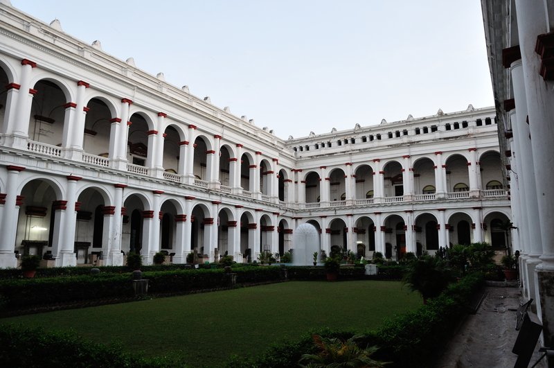
Indian Museum
Kolkata
The oldest and largest museum in India, with wide-ranging collections of antiquities, sculpture, fossils, and art, including Buddhist relics and a Bharhut railing.
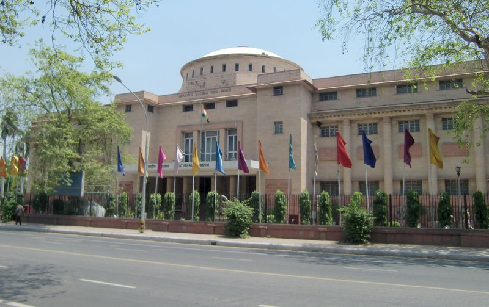
National Museum
New Delhi
India's premier national museum, covering the subcontinent from the Indus Valley civilization onward, with sculpture, miniature paintings, and decorative arts.
Israel
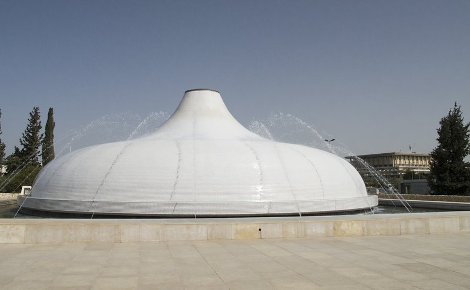
Israel Museum
Jerusalem
Israel's national museum of art and archaeology, whose Shrine of the Book displays the Dead Sea Scrolls beside a large-scale model of Second Temple-era Jerusalem.
Italy
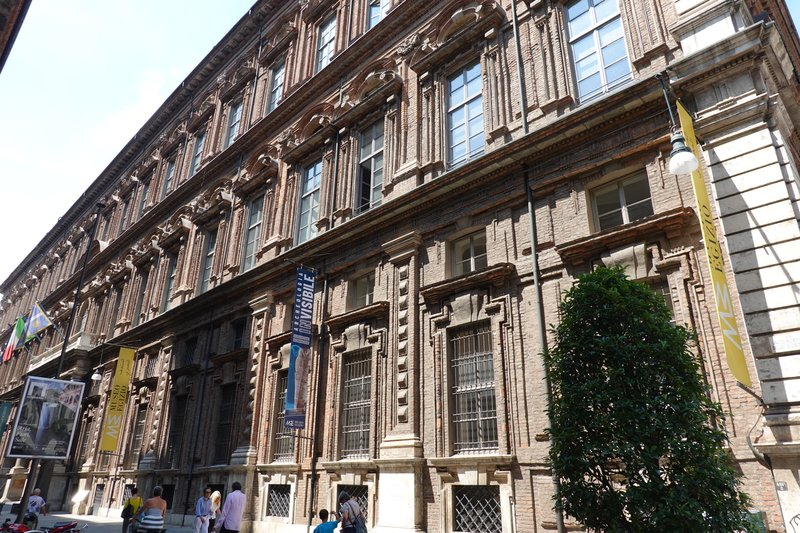
Museo Egizio
Turin
Museum dedicated exclusively to ancient Egyptian art and archaeology, holding one of the largest such collections in the world outside Cairo.
Japan
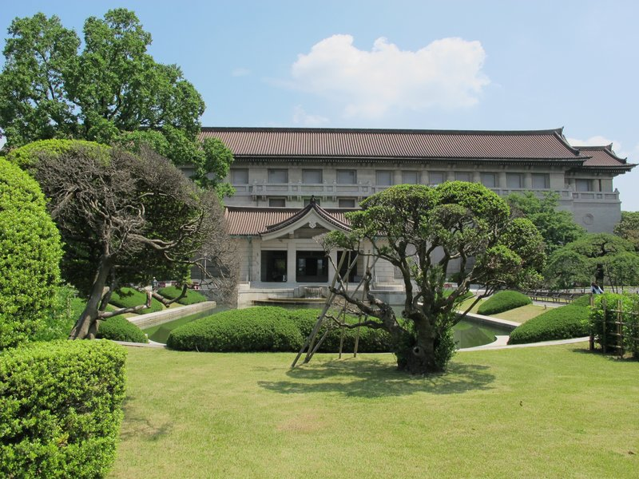
Tokyo National Museum
Tokyo
Japan's oldest and largest museum, in Ueno Park, holding the country's foremost collection of Japanese art and antiquities, including samurai swords and Buddhist sculpture.
Kenya
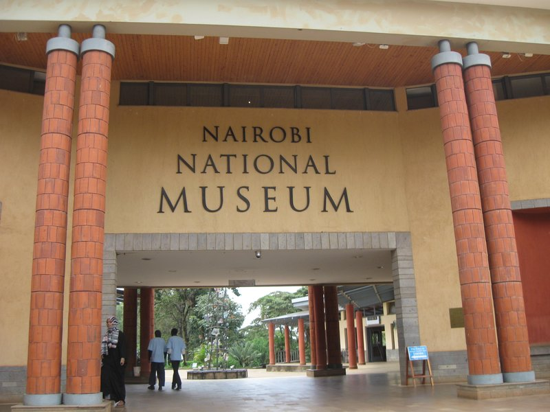
Nairobi National Museum
Nairobi, Kenya
Kenya's flagship museum covering natural history, culture, and art, notable for its collection of early hominid fossils from the Rift Valley and East African wildlife exhibits.
Mexico
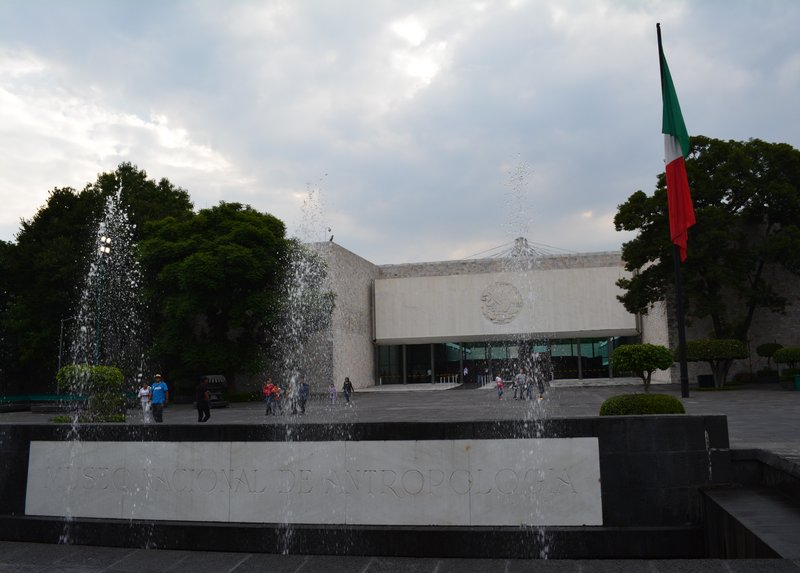
Netherlands
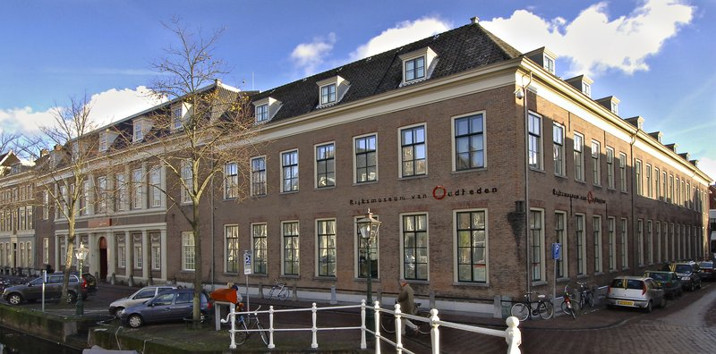
Rijksmuseum van Oudheden
Leiden
The Netherlands' national museum of antiquities, holding Egyptian, Classical, and Near Eastern collections, including the ancient Egyptian Temple of Taffeh indoors.
Peru
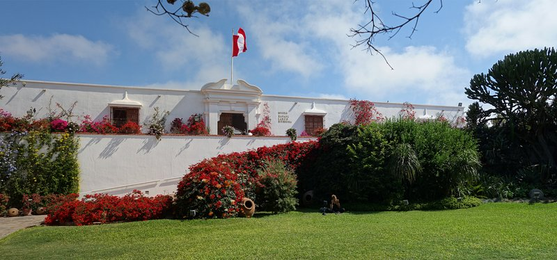
Museo Larco
Lima
Private museum in a colonial-era mansion showcasing pre-Columbian art, especially Moche pottery, gold and silver ornaments, and a noted erotic ceramics gallery.
Russia
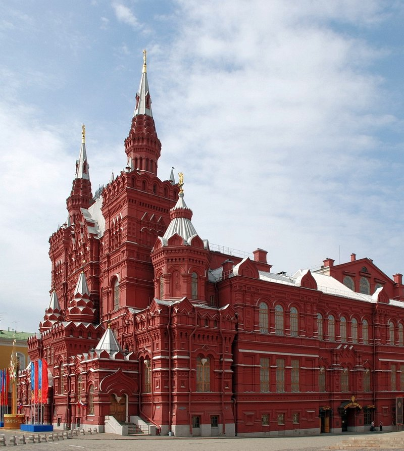
South Korea

National Museum of Korea
Seoul
Korea's flagship museum of history and art, tracing the peninsula from prehistory onward, with celadon ceramics, Buddhist statuary, and the Pensive Bodhisattva.
Spain
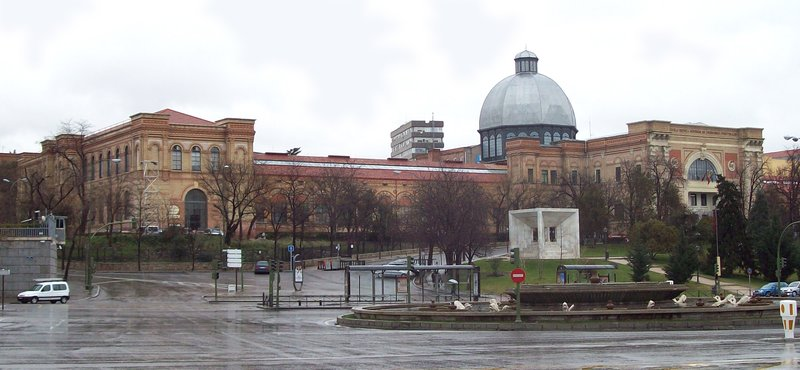
Museo Nacional de Ciencias Naturales
Madrid
Spain's national natural sciences museum, with collections spanning zoology, geology, and paleontology, including skeletons of extinct South American mammals.
Taiwan

National Palace Museum
Taipei
Museum holding the former Chinese imperial collection, spanning millennia of art, with treasures such as the Jadeite Cabbage and the Meat-shaped Stone.
Turkey
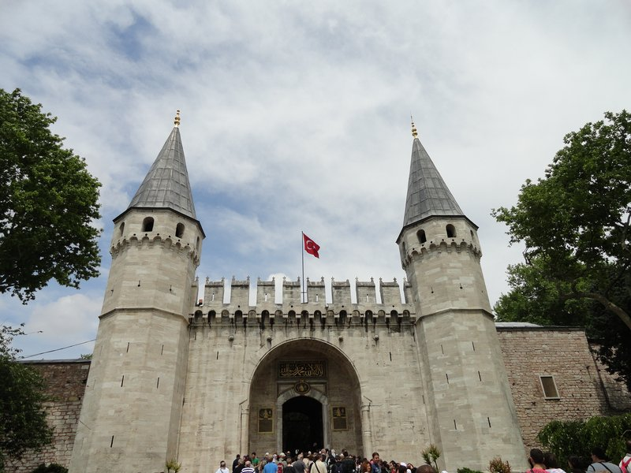
Topkapi Palace Museum
Istanbul
Former principal residence of the Ottoman sultans, now a museum of imperial treasures, sacred relics, manuscripts, and the palace harem overlooking the Bosphorus.
United Kingdom
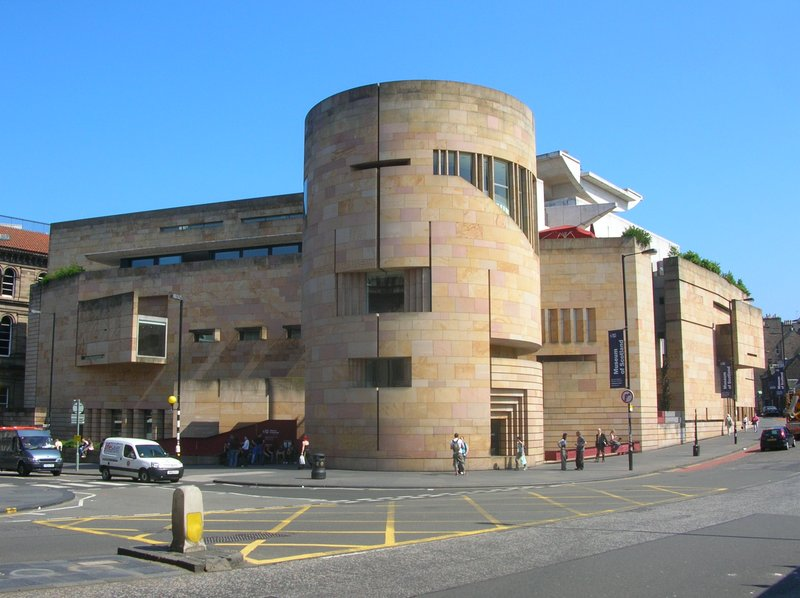
National Museum of Scotland
Edinburgh
Wide-ranging national museum covering Scottish history, natural sciences, world cultures, and technology, including Dolly the cloned sheep among its exhibits.
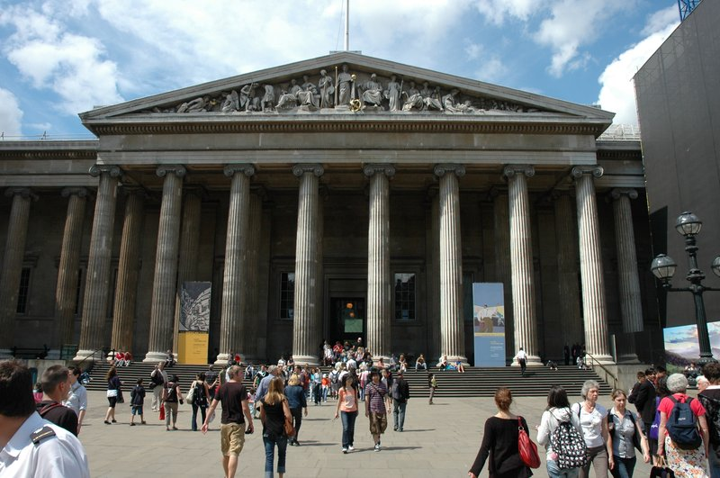
British Museum
London
Encyclopedic museum of human history and culture, holding the Rosetta Stone, the Parthenon sculptures, Egyptian mummies, and Assyrian reliefs across its collections.
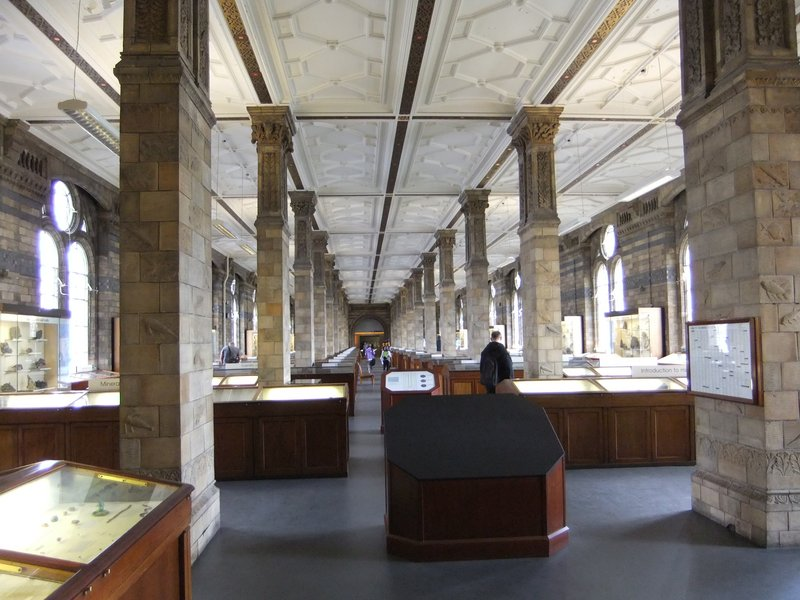
Natural History Museum
London
London natural history collection set in a landmark Romanesque building in South Kensington, famous for its dinosaur gallery, whale skeleton, and mineral halls.
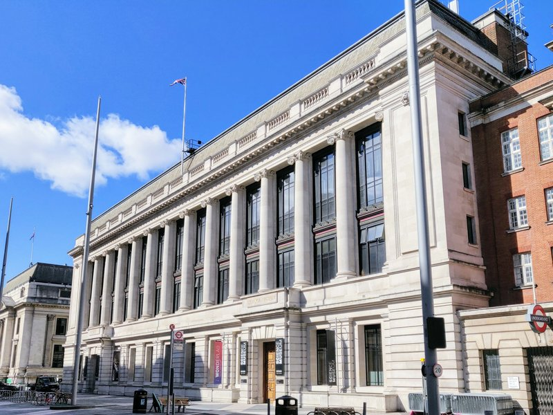
Science Museum
London
South Kensington museum of science, technology, and medicine, with exhibits on the Industrial Revolution, spaceflight, and computing including Stephenson's Rocket.
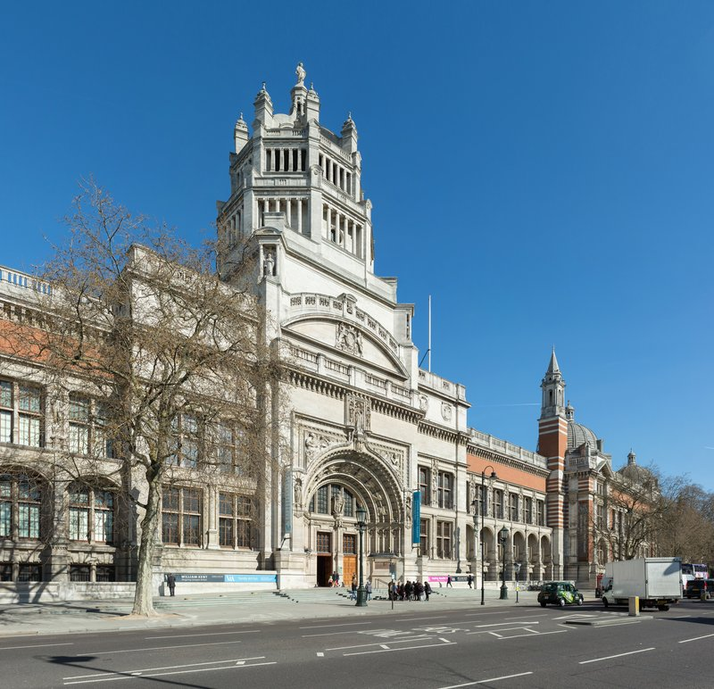
Victoria and Albert Museum
London
The world's largest museum of applied and decorative arts and design, spanning ceramics, textiles, fashion, sculpture, and metalwork across many cultures and centuries.
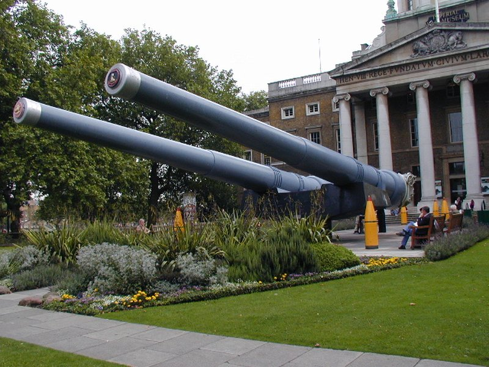
Imperial War Museum
London
Museum of modern conflict and its impact on society, covering the two World Wars onward, with military hardware, personal accounts, and a Holocaust gallery.
United States
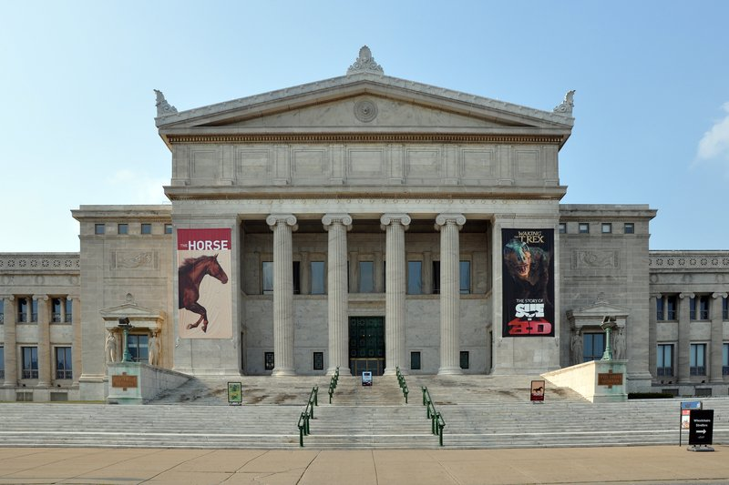
Field Museum of Natural History
Chicago, Illinois
Chicago natural history museum on the Museum Campus, home to Sue the Tyrannosaurus rex, ancient Egyptian galleries, and wide-ranging anthropology collections.
Museum of Science and Industry
Chicago, Illinois
Science and technology museum housed in a former World's Fair building, with exhibits including a captured German U-505 submarine, a working coal mine, and a full-size aircraft.
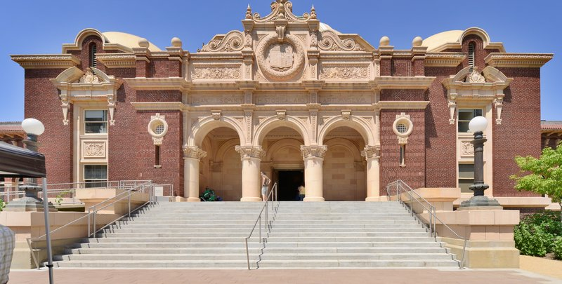
Natural History Museum of Los Angeles County
Los Angeles, California
The largest natural and cultural history museum in the western United States, known for its Dinosaur Hall, gem and mineral vault, and outdoor nature gardens.
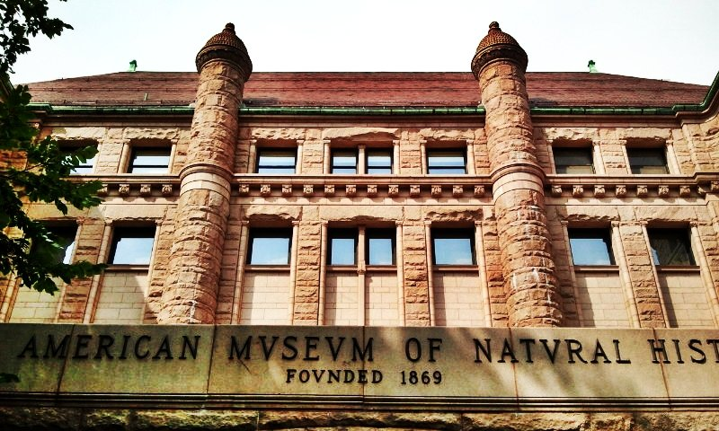
American Museum of Natural History
New York City
Manhattan natural history complex known for its dinosaur halls, the blue whale model, dioramas of wildlife, and the adjoining Rose Center planetarium.
Intrepid Sea, Air & Space Museum
New York City
Military and maritime museum aboard the aircraft carrier USS Intrepid on the Hudson, displaying vintage aircraft, the submarine Growler, and the Space Shuttle Enterprise.
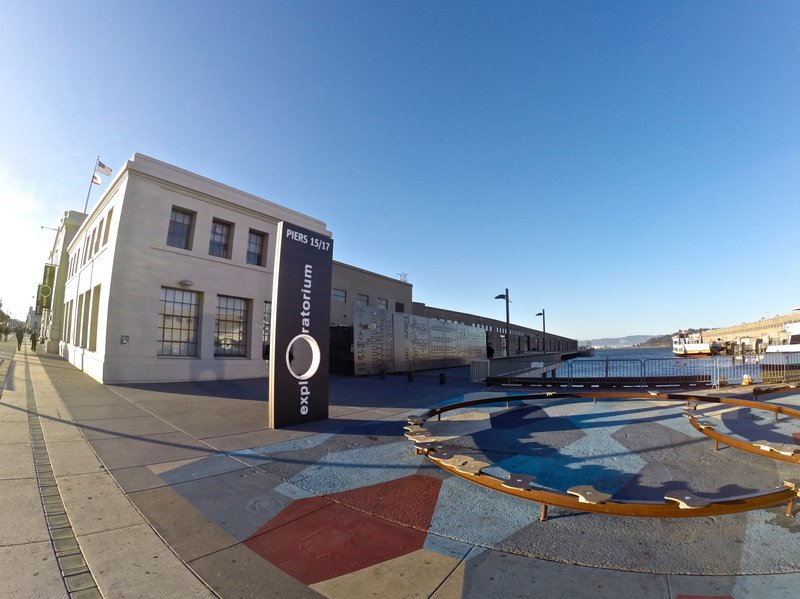
Exploratorium
San Francisco, California
Hands-on museum of science, art, and human perception on the Embarcadero, built around hundreds of interactive exhibits visitors manipulate themselves.
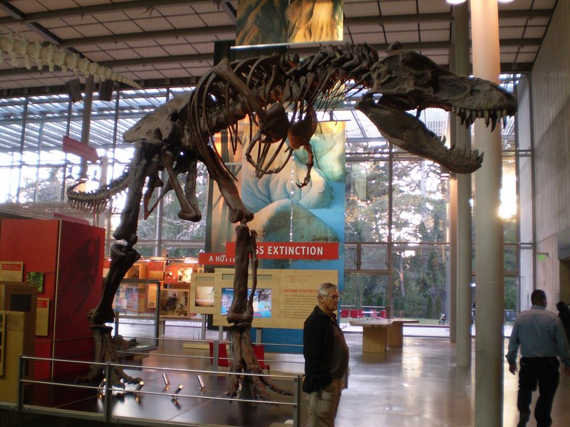
California Academy of Sciences
San Francisco, California
Natural sciences institution in Golden Gate Park combining an aquarium, planetarium, rainforest dome, and natural history museum under one living roof.
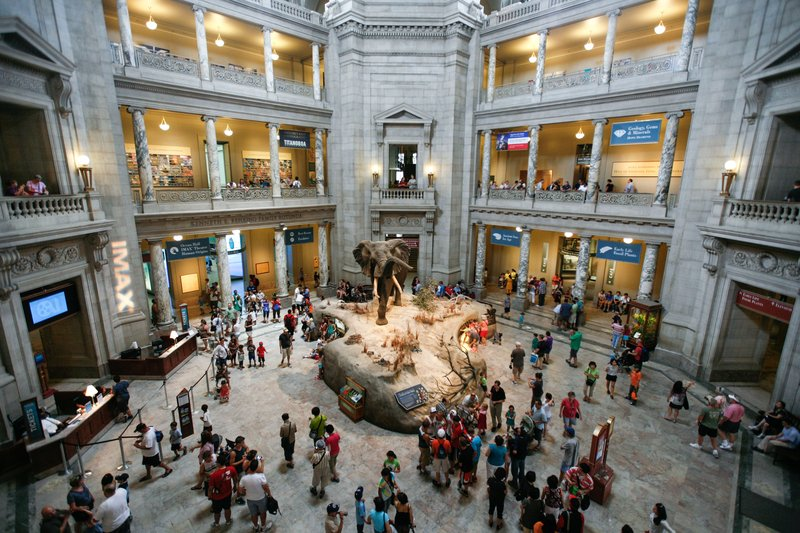
Smithsonian National Museum of Natural History
Washington, D.C.
Smithsonian museum on the National Mall spanning the natural world, from dinosaur fossils and the Hope Diamond to a live insect zoo and the human origins hall.
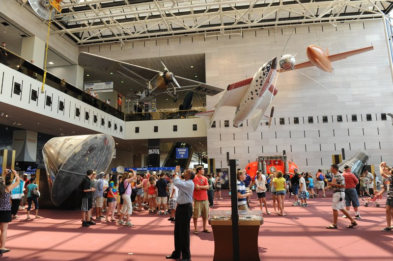
Smithsonian National Air and Space Museum
Washington, D.C.
Smithsonian museum tracing the history of flight and spaceflight, with landmark craft including the Wright Flyer, the Spirit of St. Louis, and Apollo mission hardware.
National Museum of American History
Washington, D.C.
Smithsonian museum of American social, political, and cultural history, holding icons such as the original Star-Spangled Banner and the First Ladies' gowns.
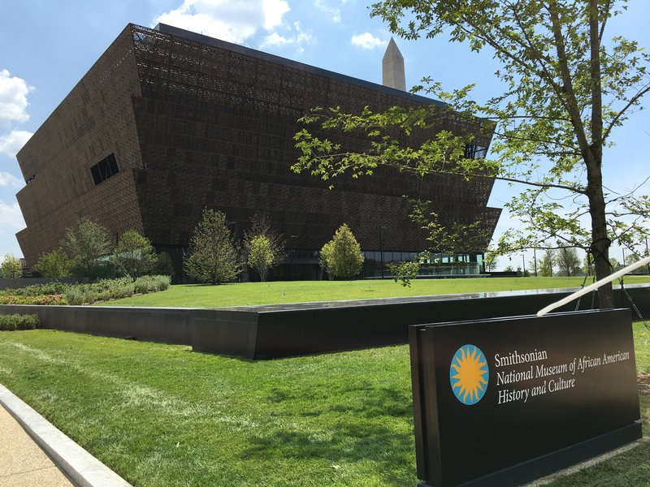
National Museum of African American History and Culture
Washington, D.C.
Smithsonian museum documenting African American life, history, and culture, from slavery and segregation through music, sports, and the arts across its tiered galleries.